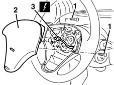
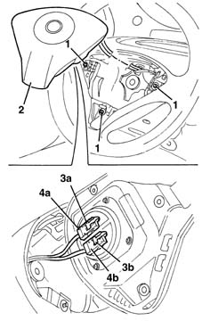

5580C18 AIR BAG MODULE - R+R
- Path
- Procedures > 55 ELECTRICAL EQUIPMENT > 5580 SPECIAL ACCESSORIES > 5580C AIR BAG SYSTEM > 5580C18 AIR BAG MODULE - R+R
- Kind
- repair procedure (removal / refitting; the operation number is the code)
- Applies to
- all engines; all production periods
- Interactive page
- https://sloeber94.github.io/elrnDB-fMltpl/en/#/2891972
Applies to: all engines; production: fino a 05/99, da 06/99 a 03/02
Applies to: all engines; production: fino a 05/99, da 06/99 a 03/02
 Removing
Removing
 Refitting
Refitting1. Undo the bolts.
2. Move the Air Bag module slightly.
3. Disconnect the electrical connection.
 | Name | Connector |
|---|---|---|
3 | Driver's Air Bag |

Applies to: all engines; production: fino a 05/99, da 06/99 a 03/02
Place the Air Bag module in the special cupboard, resting it on a free surface with the bag facing upwards.
Applies to: all engines; production: fino a 05/99, da 06/99 a 03/02
Refitting
RemovingObserve the following precaution.
If a new module is being fitted, attach the labels.
Detach the removable part of the adhesive label from the new module and put it in a specific file recording the vehicle details (model, registration data, chassis no.) and the serial no. of the old control unit. This file should be kept for future checks.
A new label is supplied together with the module, to be stuck on top of the existing one. However, it should first be perforated to indicate the month and 14 years after the year when the module is fitted (e.g. 2013 will correspond to 1999).
Reconnect the electrical connection.
Place the Air Bag module back in its housing.
Tighten the bolts to the recommended torque.
 | Fastening | Component | Ø | Value (daNm) |
|---|---|---|---|---|
- | Bolt | AIR BAG MECHANICAL MODULE | M6 | 0.7 - 1.1 |
Connect the battery.
Check the operation of the system using the Examiner or another tester.
Applies to: all engines; production: fino a 05/99, da 06/99 a 03/02
Applies to: all engines; production: da 09/03, da 04/02 a 08/03, da 06/04, fino a 05/04
Removing
Refitting1. Undo the bolts.
2. Move the Air Bag module slightly.
3. Release the safety tabs (3a), (3b).
4. Disconnect the electrical connections (4a), (4b).

Applies to: all engines; production: da 09/03, da 04/02 a 08/03, da 06/04, fino a 05/04
Place the Air Bag module in the special cupboard, resting it on a free surface with the bag facing upwards.
Applies to: all engines; production: da 09/03, da 04/02 a 08/03, da 06/04, fino a 05/04
Refitting
RemovingFollow these precautions.
Detach the removable part of the adhesive label from the new module and put it in a specific file recording the vehicle details (model, registration data, chassis no.) and the serial no. of the old module. This file should be kept for future checks. A new label is supplied together with the module, to be stuck on top of the existing one. However, it should first be perforated to indicate the month and 14 years after the year when the module is fitted (e.g. 2016 will correspond to 2002).
Reconnect the electrical connections and attach the safety tabs.
Refit the Air Bag module.
Tighten the bolt to the recommended torque.
| Fastening | Component | Ø | Value (daNm) |
|---|---|---|---|---|
- | Bolt | AIR BAG MECHANICAL MODULE | M6 | 0.8 |
Connect the battery.
Check the operation of the system using the Examiner or another tester.
Topics linked from this page (2)
Topics that link to this page (11)
- 3350E20 steering angle sensor r r
- 4110A11 steering wheel - r+r for replacement or check for versions with air bag
- 4110A31 Steering control shaft SUPPORT - R.R. for versions with Air Bag
- 5505C30 under-facia wiring - r r
- 5505C31 under-facia wiring - r r
- 5520A12 ignition switch assembly - r r for versions with air bag
- 5550A12 complete stalk unit - r+r for versions with air bag
- 5570T66 MODULE (ONE) ON STEERING WHEEL FOR RADIO CONTROL - R+R
- 5580C12 clock spring for air bag module on steering wheel r r
- 5580C80 airbag system wiring bundle - r r or replace
- 5580C82 airbag system wiring bundle - r r or replace with facia removed